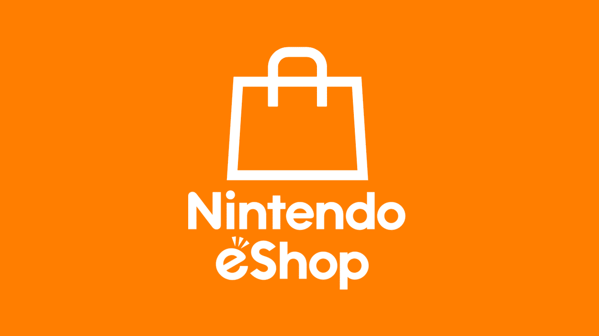

.png)
Nintendo Switch es la consola de Nintendo híbrida entre portátil
y sobremesa, antes de su lanzamiento era conocida como Nintendo
NX hasta que a finales de 2016 se anunciara su lanzamiento mundial
para el 3 de marzo de 2017. La Nintendo Switch incorpora dos controles
llamados Joy Con que se pueden desacoplar de la consola para juegos
multijugador local como el Mario Kart, también tienen giroscopio cámara
infrarroja, NFC y vibración HD tecnologías que son aprovechadas por otros
juegos, como 1,2,3 Switch, que acompañó a la consola en su lanzamiento.
La consola tiene una pantalla táctil de 6.2” y lleva en su interior un
SoC NVIDIA Tegra modificado para Nintendo, incorpora 32 GB de
almacenamiento ampliables con una ranura para tarjetas microSD de
hasta 2 TB, dispone de 4 GB de RAM LPDDR4 y conexión Wifi de 2.4
y 5 GHz 802.11 ac, aunque también es posible conectarla mediante
Ethernet con un adaptador USB. Podemos usar la consola como portátil
o como consola de escritorio cuando la acoplamos a su Dock que se conecta
mediante el puerto USB de tipo C, el Dock nos ofrece 3 conexiones USB
y una conexión HDMI para conectar a una televisión o proyector.
 Una de las funcionalidades más destacadas de esta consola es su
Una de las funcionalidades más destacadas de esta consola es su
capacidad de permitirle al jugador utilizarla desde casa o de manera
portátil sin necesidad de comprar accesorios o aditamentos extras
basta con quitarle su base.
Toda la flexibilidad que necesitas en un mando, ya sea en un control
o dos, en vertical o en horizontal, mando por movimiento o con los
botones Joy-Con y Nintendo Switch te ofrecen total adaptabilidad a
la hora de jugar. Uno de los aditamentos que ofrece Nintendo Switch
en sus controles Joy-Con es el sistema de vibración HD, diseñado
especialmente para darle más profundidad a los juegos.

Nintendo es conocido por ofrecer, en la mayoría de sus entregas
contenidos aptos para todo tipo de público; sin embargo, al igual
que otros dispositivos, Nintendo Switch integra una funcionalidad
de control parental para gestionar su uso, ideal para restringir las
compras en Nintendo eShop, limitar la publicación en redes sociales
controlar el acceso a los juegos según su clasificación por edad y más.